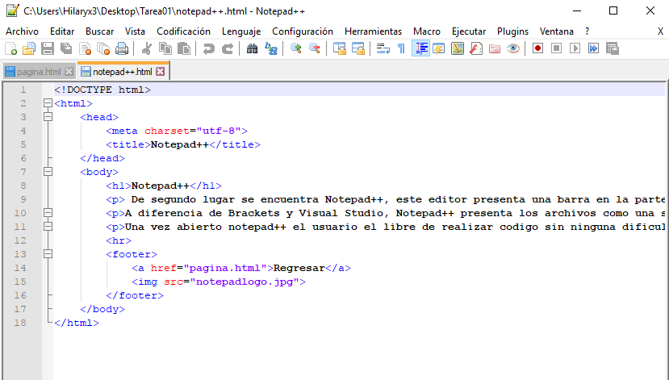

De segundo lugar se encuentra Notepad++, este editor presenta una barra en la parte superior que permite al usaurio realizar distintas funciones de manera sencilla, ademas permite minimizar secciones del codigo, lo cual permite un mayor orden y entendimiento en codigos extensos.
A diferencia de Brackets y Visual Studio, Notepad++ presenta los archivos como una serie de pesañas en la parte superior de la pantalla Al igual que Brackets ofrece la posibilidad de observar archivos simultaneamente.
Una vez abierto notepad++ el usuario el libre de realizar codigo sin ninguna dificultad, ya que ofrece una interfaz simple y facil de entender.
